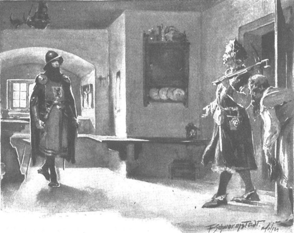

Mặc dù nóng ruột muốn lên đường trở về Zgorzelice nhưng chàng Glowacz cũng không thể đi ngay vì đường sá đã trở nên vô cùng khó đi. Sau những ngày đông lạnh lẽo, giá băng cóng buốt và những trận mưa tuyết tràn về phủ kín cả làng mạc, bây giờ là những ngày tuyết tan, ẩm ướt. Ngược với tên gọi của mình, tháng hai hoàn toàn chẳng khắc nghiệt [200] chút nào. Đầu tiên là những màn sương mù dày đặc che mờ mọi vật, tiếp đó là sương móc rơi rào rạt như mưa, khiến những cồn tuyết trắng tan đi rõ rệt, còn giữa những đợt sương móc là gió, những trận gió thường chỉ có trong tháng ba - đột ngột, đứt đoạn, dồn đuổi những đám mây nặng trĩu trên bầu trời, rú rít trong những lùm cây thấp, gầm gào trong những cánh rừng, nuốt chửng những lớp tuyết vừa mới đây còn phủ chăn đắp kín cho những thân cành ngủ say trong giấc mùa đông yên ả. Những khu rừng đen thẫm lại. Trên những nội cỏ đột ngột trải dài những dải nước rộng, gợn sóng lăn tăn, sông suối dềnh lên, mở rộng lòng. Chỉ dân ngư phủ là thích tiết trời nước nôi ẩm ướt ấy, còn tất cả những người khác thì như bị thần nước cầm tù, đành phải chui rúc trong lều, trong nhà. Nhiều nơi, chỉ có thể đi lại bằng thuyền từ làng này sang làng khác. Tuy vẫn có những bờ đất cao cùng các con đường được lát bằng những thân gỗ tròn băng qua các bãi lầy và các khu rừng, nhưng vào tiết trời này những bờ đất ấy nhão ra, các thân gỗ tròn lún xuống đất ở những nơi sũng nước, xe ngựa đi qua đó không an toàn hoặc không thể qua được. Đối với chàng trai người Séc, khó khăn lớn nhất là phải vượt qua cả vùng Wielkopolska chi chít đầm hồ, nơi vào tiết xuân nước ngập nhiều hơn so với những vùng khác, vì vậy mà đường đi - nhất là đi ngựa - càng khó vượt hơn.
Chàng thường phải lưu lại chờ đợi hàng tuần liền ở các thị trấn hoặc những làng quê, tại nhà các trang chủ hiếu khách, họ đón tiếp chàng và những người cùng đi rất chu đáo, theo đúng phong tục, thích thú lắng nghe chuyện bọn Thánh chiến, cũng thường mang bánh mì và muối để đón nghe những chuyện mới toanh.
Rồi tiếp đó mùa xuân thật sự về, kéo dài qua phần lớn tháng ba, trước khi chàng trai người Séc về đến vùng lân cận điền trang Zgorzelice và Bogdaniec.
Tim chàng trai rộn ràng khi sắp được gặp mặt cô chủ, dẫu biết chẳng bao giờ có thể có được Jagienka, như chẳng thể hái một vì sao trên trời, nhưng chàng vẫn ngưỡng mộ và yêu thương cô bằng tất cả tấm lòng. Chàng quyết định về chỗ ông Maćko trước, bởi một là chàng được phái về để gặp ông, hai là chàng phải dẫn một đoàn người đi cùng về ở hẳn tại trang Bogdaniec. Theo đúng luật lệ của Giáo đoàn, khi giết Rotgier, Zbyszko đã thu được cả đoàn tùy tùng gồm mười con ngựa và mười gia nhân. Hai người trong đó đưa xác kẻ bị giết về Szczytno, bọn còn lại được Zbyszko gửi Glowacz dắt về tặng chú, bởi chàng biết ông Maćko đang rất cần người làm.

Thoạt tiên ông không nhận ngay ra Glowacz
Tới Bogdaniec, chàng trai Séc không gặp ông Maćko ở nhà, người ta cho chàng hay rằng ông đã dắt chó và mang nỏ đi vào rừng. Nhưng ông trở về ngay ngày hôm ấy, vì khi biết có đoàn người ngựa đông đúc vừa tới, ông vội vàng trở về nhà để chào đón và tiếp đãi. Thoạt tiên ông không nhận ngay ra Glowacz, nhưng khi chàng trai cúi chào và xưng danh tính, ông kinh hoảng vô cùng, vứt cánh nỏ và chiếc mũ xuống đất, kêu lên:
- Lạy Chúa! Chúng giết thằng bé mất rồi! Nói ngay cho ta nghe những gì ngươi biết!
- Cậu chủ chưa bị giết đâu, - chàng trai Séc nói, - cậu vẫn khỏe lắm.
Nghe vậy, ông Maćko hơi xấu hổ, thở hổn hển hồi lâu, rồi trút một hơi thở thật dài.
- Ngợi ca Chúa Ki-tô! Ông thốt lên. - Thế giờ nó ở đâu?
- Đang đến thành Malborg ạ, cậu chủ cử con về đây báo tin.
- Nó tới Malborg làm gì?
- Cậu ấy đi tìm vợ.
- Này con, hãy biết kính trọng những vết thương của Chúa chứ! Vợ nào?
- Con gái của ngài Jurand ạ. Chuyện ấy có thể kể đến hết đêm, nhưng xin ngài hãy cho con được nghỉ lấy hơi một lát, con mệt lắm, phải đi suốt từ nửa đêm tới giờ.
Ông Maćko không hỏi nữa, vì quá đỗi bàng hoàng, khó lòng thốt nên lời. Bình tĩnh lại đôi chút, ông quát gia nhân ném thêm củi vào lò, mang thức ăn ra mời chàng trai Séc, rồi ông cứ đi đi lại lại trong phòng, vung cả hai tay, nói một mình:
- Không dám tin ở tai ta nữa… Con gái hiệp sĩ Jurand… Thằng Zbyszko đã có vợ rồi…
- Cậu có vợ mà cũng như chưa có. - Chàng Séc nói.
Rồi lát sau, chàng từ từ thuật lại mọi chuyện, vị hiệp sĩ lớn tuổi háo hức lắng nghe, thỉnh thoảng lại ngắt lời bằng những câu hỏi, vì câu chuyện chàng Séc kể lại không mấy rõ ràng. Ví dụ, Glowacz không biết chính xác Zbyszko cưới lúc nào, bởi không hề có đám cưới, mà do quyết định của chính quận chúa Anna Danuta, và chuyện ấy mọi người chỉ được biết sau khi gã hiệp sĩ Thánh chiến Rotgier xuất hiện - kẻ mà Zbyszko đã thách ra trước tòa phán xử của Chúa và đã quyết đấu trước mặt cả triều đình Mazowsze.
- A! Quyết đấu? - Ông Maćko reo lên, mắt sáng long lanh, hết sức háo hức. - Thế rồi sao?
- Cậu chủ đã chém thằng Đức thành hai mảnh, con cũng được Chúa cho xẻ thịt thằng hộ vệ.
Ông Maćko lại thở gấp gáp, nhưng lần này là vì quá hài lòng.
- Hà! Nó đâu phải đứa con trai sinh ra để làm trò cười! Nó là cháu con còn ít tuổi của dòng họ Mưa Đá , nhưng xin Chúa giúp cho, hẳn không phải là đứa cuối cùng. Hồi đánh nhau với bọn hiệp sĩ Fryzja… Nó hãy còn là một đứa trẻ…
Nói đoạn, ông chăm chú ngắm gã trai Séc một đôi lần, rồi tiếp:
- Ngươi cũng vừa ý ta lắm. Hẳn là ngươi không bịa chuyện. Mùi dối trá thì ta ngửi thấy ngay. Thằng hộ vệ kia thì chẳng thèm nói làm gì, chính ngươi cũng bảo là không có gì vất vả, nhưng việc ngươi bẻ gãy tay đồ chó đẻ ấy, rồi trước đó lại hạ được cả con bò tót, thì quả là những hành động can trường.
Rồi đột nhiên ông hỏi:
- Thế còn chiến lợi phẩm? Cũng khá chứ hả?
- Chúng con thu được giáp phục, ngựa và mười gia nhân, cậu chủ gửi về tặng ngài tám tên.
- Thế nó làm gì với hai thằng còn lại?
- Cậu chủ sai chúng chở cái xác về thành.
- Sao quận công không sai gia nhân của ngài làm việc đó? Hai thằng kia chắc là sẽ mất hút luôn thôi.
Chàng trai Séc mỉm cười trước lòng tham không kìm chế nổi và thường xuyên bộc lộ ở ông lão.
- Cậu chủ bây giờ không cần phải đếm xỉa đến chuyện vặt đó nữa đâu. - Chàng trai thốt lên. - Spychow là cả một trang trại lớn.
- Lớn! Ô, nhưng mà sao? Đã phải của nó đâu?
- Vậy thì của ai nữa ạ?
Ông Maćko đứng bật dậy.
- Ngươi nói mau! Thế còn ông Jurand thì sao?
- Hiệp sĩ Jurand đang nằm chờ chết trong hầm giam của bọn Thánh chiến. Chỉ có Chúa mới biết ngài có qua được không, nếu ngài có sống chăng nữa cũng chẳng biết có được trở về? Và dẫu ngài có sống mà trở về thì cha Kaleb cũng đã đọc di chúc cho mọi người hay rằng ngài đã trao toàn bộ gia sản cho cậu chủ nhà ta rồi ạ.
Cái tin mới mẻ này gây ấn tượng rất mạnh đối với ông Maćko, nhưng nó vừa quá tuyệt vời lại vừa không hay, đến nỗi ông không tài nào khống chế nổi những tình cảm rất trái ngược nhau đang thay nhau khuấy đảo trong lòng. Thoạt tiên, tin Zbyszko lấy vợ khiến ông đau lòng, bởi ông yêu thương Jagienka như cha đẻ, và hết sức mong muốn tác thành cho cô với Zbyszko. Tuy nhiên, ông cũng quen coi đó là chuyện đã hỏng, không thể vớt vát được gì. Hơn nữa, Jurandówna mang lại cho gia đình ông những điều mà Jagienka không thể mang lại - đó là ân sủng của quận công, và hồi môn của cô gái con một ấy cũng lớn hơn gấp nhiều lần. Trong thâm tâm, ông Maćko tưởng tượng Zbyszko sẽ là một vị quận mã của quận công, là trang chủ của cả Bogdaniec lẫn Spychow, ha, và trong tương lai biết đâu chàng chẳng lên đến chức trấn thành cũng nên. Đó là chuyện thật phi thường, bởi thời bấy giờ người ta thường nói về các lãnh chúa nghèo thế này: “Ông ấy có mười hai thằng con, sáu thằng chết trận, sáu thằng làm trấn thành.” Cũng giống như các dòng họ, dân tộc chỉ trở nên vĩ đại nhờ tài sản. Một sản nghiệp lớn có thể giúp Zbyszko trên đường hoạn lộ. Cũng vì thế, ông Maćko có lý do để thỏa mãn lòng tham và lòng tự hào dòng tộc. Song, vị hiệp sĩ già cũng không thiếu lý do để lo lắng. Trước đây, chính ông đã lặn lội sang vùng đất bọn Thánh chiến để tìm cách cứu Zbyszko, và cuộc hành trình ấy đã tặng cho ông một mẩu sắt dưới xương sườn; bây giờ đến lượt Zbyszko tới thành Malborg, có khác gì dấn thân vào hàm sói? Không biết ai đợi chàng ở đó - cô vợ hay thần chết.
“Ở đó bọn chúng chẳng thích gì nó,” ông Maćko nghĩ bụng, “nó lại vừa mới xơi tái mất một hiệp sĩ có hạng của chúng, trước đó nó cũng đã từng tấn công Lichtenstein, mà bọn chó đẻ ấy là chúa thù dai.” Ý nghĩ ấy khiến vị hiệp sĩ lớn tuổi rất đỗi lo lắng. Ông đoán rằng chàng trai nông nổi Zbyszko ở nơi ấy khó lòng tránh được chuyện quyết đấu với một tên Đức nào đó. Điều đó không đáng lo, điều ông Maćko sợ nhất là chúng sẽ bắt giữ Zbyszko. “Chúng đã dám bắt hiệp sĩ Jurand cùng cô con gái, chúng không run tay khi bắt cóc cả quận công tại thành Zlotoryja ngày trước, vậy chúng ngại gì không bắt Zbyszko?”
Nghĩ đến đây, trong đầu ông hiện ra câu hỏi: nếu chàng trai thoát khỏi tay bọn Thánh chiến nhưng lại không tìm được vợ thì sao? Ông Maćko hài lòng khi biết trang Spychow sẽ trở thành tài sản của chú cháu ông, nhưng đó chỉ là một thoáng vui ngắn ngủi. Ông chăm chắm chắt chiu cho sản nghiệp, nhưng chẳng kém phần lo cho hậu duệ dòng họ, cho con cháu của Zbyszko. “Nếu Danusia biệt tăm như hòn đá rơi xuống đáy nước sâu, không ai biết sống hay chết, thì Zbyszko đâu thể lấy vợ khác - và vậy thì dòng họ Mưa Đá Bogdaniec đâu thể tồn tại trên đời. Hey! Nếu Jagienka thì lại là chuyện khác!… Ấp Moczydoly cũng rộng rãi thênh thang, cò bay thẳng cánh, chó chạy ngay đuôi, mà một thiếu nữ như nàng thì ắt hẳn sẽ sòn sòn năm một, như cây táo hằng năm sai quả trĩu trịt trong vườn.” Và thế là trước điền sản mới, lòng ông lão Maćko chợt thấy buồn hơn vui, rồi vì buồn phiền, lo lắng, ông bắt đầu căn vặn chàng trai người Séc về cái đám cưới không rõ tổ chức hồi nào.
Chàng Séc đáp:
- Thưa chủ nhân, con đã thưa với ngài là con không biết cậu chủ làm phép cưới từ khi nào, còn những điều con phỏng đoán thì không dám chắc đâu ạ.
- Thế ngươi đoán thế nào?
- Con không hề rời cậu chủ, bao giờ cũng ngủ cùng phòng với cậu. Chỉ một đêm cậu bảo con ra ngoài, rồi sau đó con thấy quận chúa với tiểu thư Jurandówna, hiệp sĩ de Lorche và cha Wyszoniek vào phòng. Con ngạc nhiên khi thấy tiểu thư đội vòng hoa, nhưng con lại nghĩ là mọi người đến để làm lễ cho cậu chủ… Có thể là hôm ấy… Con còn nhớ cậu chủ bắt con phải mặc cho cậu đẹp như đi dự cưới, nhưng con cứ tưởng chẳng qua là để đón nhận Mình Thánh mà thôi.
- Rồi sau đó thế nào? Hai đứa ở riêng với nhau chứ?
- Uh! Không ở riêng tí nào, mà nếu có ở riêng thì đêm ấy cậu chủ yếu lắm, ăn còn phải bón kia mà!… Đám người giả danh người nhà ông Jurand đã đến chực sẵn, sáng sớm tinh mơ tiểu thư phải lên đường ra đi…
- Và từ ngày ấy Zbyszko không gặp lại con bé lần nào ư?
- Không một ai gặp lại tiểu thư nữa.
Im lặng hồi lâu.
- Ngươi nghĩ sao? - Lát sau ông Maćko lại hỏi. - Lũ Thánh chiến có chịu thả con bé không?
Chàng trai Séc lắc đầu, phẩy tay vô vọng.
- Cứ theo con nghĩ, - chàng thong thả đáp, - thì tiểu thư mất tích luôn rồi.
- Tại sao? - Ông Maćko bật lên hỏi như kinh hoảng.
- Giá chúng nhận là đang giam giữ tiểu thư, thì còn đôi chút hy vọng. Có thể kêu kiện, trả tiền chuộc, hay dùng vũ lực đánh tháo. Nhưng bọn chúng lại bảo thế này: khi giải thoát được một cô gái khỏi tay bọn cướp, chúng đã báo ngay cho ngài Jurand; nhưng để đền đáp lòng tốt của chúng, ngài không những không chịu nhận con gái mà lại giết bao nhiêu người của chúng, nhiều hơn số nhân mạng ngã xuống trong một trận chiến đấu.
- Nghĩa là chúng có cho ông ấy xem mặt một cô gái nào đó?
- Chúng bảo là có. Nhưng chỉ có Chúa mới biết! Có thể không, cũng có thể chúng đưa một cô gái khác ra cho ngài. Chỉ có điều quả thật ngài đã đánh giết bọn chúng, mà chúng thì thề rằng không hề bắt cóc tiểu thư Jurandówna. Đây là chuyện rất phức tạp. Dù cho đại thống lĩnh có ra lệnh chăng nữa, thì chúng cũng sẽ bảo là không hề giam giữ cô gái. Ai chứng minh được? Hơn nữa triều thần Ciechanow có nói đến bức thư của ngài Jurand, viết rằng con gái ngài không nằm trong tay bọn Thánh chiến.
- Cũng có thể không ở trong tay bọn Thánh chiến thật?
- Thưa chủ nhân! Nếu bọn cường đạo nào đó bắt cóc cô ấy thì chẳng nhằm mục đích nào khác ngoài việc đòi tiền chuộc. Mà bọn cướp thường thì đâu có thể viết được thư, mạo được con dấu của hiệp sĩ trang chủ Spychow, lại còn phái cả một đoàn tùy tùng đi đón?
- Đúng vậy. Nhưng bọn Thánh chiến bắt con bé làm gì mới được chứ?
- Thế còn mối thù với ngài Jurand? Chúng ham trả nợ máu hơn cả uống mật ong và rượu nho, mà chúng có thừa lý do để đòi nợ. Đối với chúng, hiệp sĩ trang Spychow là một hung thần, những việc ngài đã làm trong thời gian gần đây quả thực khiến chúng ngán hết chỗ nói… Cậu chủ của con cũng vậy, con nghe bảo rằng cậu đã từng tấn công hiệp sĩ Lichtenstein, lại giết cả Rotgier! Chúa cũng đã giúp con vặn gãy tay đồ chó đẻ đó! Hey! Hãy tính thử xem: có bốn mống, thì ba đã toi mạng, giờ chỉ còn một mống, lại là một lão khọm già. Thưa ông chủ, nanh vuốt chúng ta cũng mạnh đấy chứ ạ!
Một hồi lâu im lặng bao trùm.
- Ngươi đúng là một hộ vệ giỏi! - Ông Maćko thốt lên. - Thế ngươi nghĩ bọn chúng sẽ làm gì với cô gái đó?
- Ngài Witold là một đại quận công, nghe đồn đích thân hoàng đế nước Đức cũng đã từng cúi gập người chào ngài, vây mà chúng đã cả gan làm gì với mấy người con của đại quận công? Ở chỗ chúng thiếu gì thành quách? Thiếu gì hầm giam? Thiếu gì giếng cạn? Thiếu gì dây thòng lọng thắt cổ?
- Lạy Đức Chúa hằng sống! - Ông Maćko thốt lên.
- Cầu Chúa để chúng không chôn sống cậu chủ, dẫu cậu mang theo bức thư của quận công và có hiệp sĩ de Lorche đi cùng, đó là một vị hiệp sĩ giàu có lại có họ với các quận công. Ha! Con đâu muốn trở về đây, ở bên ấy dễ được đánh nhau hơn. Nhưng cậu chủ đã ra lệnh cho con. Có lần, con nghe cậu nói với ngài trang chủ Spychow thế này: “Ngài có khôn khéo không?” Cậu hỏi. “Chứ con thì không, không khéo được, mà với chúng nó thì cần phải tinh ranh! Ôi!” Cậu bảo. “Giá thúc phụ Maćko của con ở đây thì hay biết mấy!” Cũng vì thế, cậu chủ phái con về đây. Nhưng ngay cả chủ nhân nữa, thưa chủ nhân, cũng chẳng thể cứu được tiểu thư Jurandówna đâu, bởi rất có thể nàng đã sang thế giới bên kia rồi, mà với thần chết thì ngay cả người tinh khôn nhất cũng bất lực.
Ông Maćko trầm ngâm suy nghĩ, hồi lâu sau ông mới lên tiếng:
- Ha! Thế thì chẳng còn cách nào! Chống lại thần chết thì tinh khôn mấy cũng chẳng ích gì. Nhưng nếu ta đi được đến đấy, tìm biết được chúng đã giết cô gái kia rồi, thì dẫu sao trang Spychow cũng sẽ được giao hẳn cho Zbyszko, và thằng bé thì có thể trở về đây mà cưới cô gái khác…
Đến đây, ông Maćko trút một hơi thở thật dài như vừa rũ bỏ được gánh nặng đè trĩu trái tim. Glowacz cất giọng rụt rè khẽ hỏi:
- Cưới cô chủ Zgorzelice ạ?…
- Ừ! - Ông Maćko đáp. - Bây giờ con bé mồ côi mồ cút, còn thằng Cztan trang Rogowo và gã Wilk trang Brzozowa càng ngày càng tệ…
Chàng trai người Séc đứng bật dậy.
- Cô chủ mồ côi rồi sao? Thế hiệp sĩ Zych…?
- Ngươi chưa biết chuyện gì sao?
- Lạy Chúa lòng lành! Có chuyện gì xảy ra thế?
- Ha, phải rồi, ngươi biết sao được, ngươi đi thẳng về đây, mà suốt nãy giờ ta chỉ toàn nói chuyện Zbyszko! Con bé mồ côi rồi!
Nói thật ra ông Zych trang Zgorzelice chẳng bao giờ chịu ngồi yên ở nhà, trừ khi có khách. Lão thường mơ tới những chuyến đi. Lần ấy cha tu viện trưởng viết thư báo cho biết là cha định đến thăm quận công Przemko ở Oświęcim và mời lão Zych cùng đi. Lão Zych rất mừng vì vốn quen quận công và đã nhiều phen cùng ngài vui thú. Thế là lão bèn sang bảo ta: “Tôi đi Oświęcim, rồi tới Glewice; nhờ bác để mắt giùm tôi bên Zgorzelice với nhá!” Tự nhiên ta linh cảm thấy chuyện không hay, mới khuyên lão: “Chớ đi! Bác nên ở nhà với Jagienka trông nom trang trại, chứ tôi biết là Cztan với thằng Wilk định giở trò không hay đấy.” Ngươi nên biết rằng vì bực Zbyszko, cha tu viện trưởng đầu tiên định gả con bé cho gã Wilk hoặc Cztan, nhưng về sau, khi hiểu rõ chúng hơn, cha đã có lần lấy gậy nện cả hai thằng và tống cổ khỏi Zgorzelice. Chuyện ấy hay thì cũng hay, nhưng không hay lắm bởi hai đứa rất cay cú. Bây giờ hơi yên yên một chút, vì hai thằng đang hằm hè nhau, chứ trước kia không lúc nào yên. Chuyện gì cũng trút lên đầu ta - hết chăm lo lại bảo vệ. Giờ đến lượt Zbyszko muốn ta ra đi… Đâu thể biết trước được Jagienka ở đây rồi sẽ ra sao, nhưng thôi, để ta kể ngươi nghe nốt chuyện lão Zych. Lão không thèm để ý lời ta, cứ đi. Bọn họ cùng nhau tiệc tùng, vui vẻ! Rời Glewice, họ tới thăm thân phụ quận công Przemko, cụ Noszak, đang trị vì ở Cieszyn. Chẳng ngờ ông Jaśko, quận công xứ Racibórz, vì mối thâm thù quận công Przemko, đã xui kẻ cướp người Séc là Chrzan tấn công họ. Cả quận công Przemko lẫn lão Zych trang Zgorzelice đều tử nạn, bị mũi tên cắm ngập vào cổ. Cha tu viện trưởng bị chùy sắt đánh vào đầu, đến tận bây giờ cái đầu vẫn cứ lắc la lắc lư, không biết đến chuyện gì ở bên ngoài, lại bị câm vĩnh viễn. Quận công Noszak mua lại Chrzan từ tay một hiệp sĩ ở Zampach, bắt hắn phải chịu biết bao cực hình khủng khiếp mà ngay đến những người già cũng chưa từng nghe nói đến bao giờ - nhưng những cực hình kia đâu thể làm nguôi ngoai được nỗi thương tiếc đứa con trai, đâu thể khiến được lão Zych sống lại, cũng chẳng làm khô đi nước mắt của Jagienka. Đấy, trò vui của họ đã kết thúc thế đấy… Sáu tuần trước, người ta vừa chở xác ông Zych về đây chôn cất.
- Một trang hiệp sĩ kiêu dũng là thế!… - Chàng trai Séc thương tiếc thốt lên. - Hồi ở thành Bolesławiec con cũng đâu phải tay xoàng, ấy vậy mà chưa đọc xong bài kinh ngài đã bắt sống con ngay tại trận. Mà cảnh tù tội như con được hưởng thì dù có đổi tự do, con cũng chẳng đánh đổi… Ông chủ con tốt bụng vô cùng, phẩm hạnh vô cùng! Cầu xin Đức Chúa ban cho ngài ánh sáng đời đời. Tiếc thật! Thương thật! Nhưng thương nhất vẫn là cô chủ tội nghiệp của con.
- Tội nghiệp quá! Nhiều đứa con gái không yêu mẹ bằng nó yêu cha đâu. Mà ở Zgorzelice thì nào có an toàn. Ngay sau đám tang, tuyết còn chưa phủ kín mộ ông Zych, Cztan và Wilk đã xông đến trang trại Zgorzelice. May mà người của ta báo trước, ta dẫn một đoàn nông phu chạy tới tiếp ứng, nhờ lượng Chúa, chúng ta đã nện cho chúng một trận nên thân. Sau trận ấy, con bé ôm lấy chân ta mà bảo: “Không được làm vợ Zbyszko”, - nó bảo, - “con sẽ không làm vợ ai hết, nhưng xin bác hãy cứu con khỏi bọn con của quỷ sứ kia, con thà chết chứ không chịu lấy chúng…” Bảo cho ngươi hay, bây giờ ngươi về khó lòng nhận ra trang Zgorzelice, bởi ta đã biến nó thành một thành lũy. Bọn chúng còn dẫn xác đến hai lần nữa nhưng cũng chẳng xơ múi gì. Bây giờ tạm yên một thời gian, bởi như ta đã kể với ngươi, chúng nó hục hặc nhau, chẳng đứa nào động chân động tay được.
Nghe kể, Glowacz lặng thinh không nói một lời, có điều khi nghe đến Cztan và Wilk, chàng trai nghiến răng ken két, nghe như tiếng cửa đóng mở liên tục, rồi chàng đưa đôi bàn tay to lớn xoa lia lịa hai bên đùi, như thể đang ngứa tay lắm. Sau rốt, miệng chàng khó nhọc bật ra một tiếng rủa:
- Zatraceny!… [201]
Đúng lúc ấy, có tiếng ai đó chợt vang lên ngoài hiên, cánh cửa đột ngột mở tung ra rồi Jagienka chạy ào vào nhà, đi cùng cô là đứa lớn nhất trong số mấy thằng em trai - thằng bé Jaśko mười bốn tuổi, giống cô như chị em sinh đôi.
Được nông phu Zgorzelice báo là gặp đoàn người ngựa do chàng trai Hlava người Séc dẫn đầu trở về Bogdaniec, cô cũng hoảng hốt như ông Maćko lúc nãy. Khi nghe người ta bảo không thấy có Zbyszko trong đoàn, đoán có chuyện chẳng lành, cô vội phóng ngựa một hơi sang Bogdaniec để hỏi sự tình.
- Có chuyện gì vậy?… Lạy Chúa lòng lành! - Ngay từ ngưỡng cửa, cô đã kêu lên.
- Có chuyện gì đâu. - Ông Maćko đáp. - Zbyszko vẫn sống khỏe mạnh mà.
Chàng trai Séc vội lao đến bên cô chủ, quỳ một chân, cúi hôn gấu váy cô, nhưng cô hoàn toàn không để ý đến, bởi khi nghe vị hiệp sĩ già trả lời, cô vội quay mặt đi; mãi lúc sau, như thể chợt nhớ ra là chưa chào hỏi, cô mới thốt lên:
- Sáng danh Chúa Giêsu Ki-tô!
- Đời đời! - Ông Maćko nói.
Đến lúc này mới nhận ra chàng trai Séc đang quỳ bên chân, cô bèn cúi xuống.
- Hlava, ta vui được gặp ngươi, nhưng sao ngươi để cậu chủ đi một mình?
- Cậu chủ phái con về đây, thưa cô chủ nhân hậu của con.
- Chàng ra lệnh thế nào?
- Ra lệnh trở về Bogdaniec.
- Về Bogdaniec?… Còn gì nữa?
- Cậu chủ viết thư xin thúc phụ một lời khuyên… cậu gửi lời chào và chúc sức khỏe thúc phụ.
- Về Bogdaniec, chỉ thế thôi ư? Thôi, được rồi. Nhưng chàng đang ở đâu?
- Đang ở chỗ bọn Thánh chiến, cậu chủ đến thành Malborg.
Vẻ mặt Jagienka lại hiện lên nỗi lo ngại.
- Chàng chán sống rồi sao? Để làm gì chứ?
- Cậu đi tìm thứ sẽ chẳng bao giờ thấy, thưa cô chủ nhân từ.
- Phải rồi, chẳng tìm thấy được đâu! - Ông Maćko chen ngang. - Không có búa làm sao đóng được nắp, thiếu ý Chúa thì ý thế nhân chẳng ích gì.
- Bác nói chuyện gì vậy? - Jagienka hỏi.
Nhưng ông Maćko đáp lại câu cô hỏi bằng một câu hỏi:
- Thế Zbyszko có nói gì với con về Jurandówna không, cứ như bác biết thì nó có nói?
Jagienka không trả lời ngay, mãi sau, nến một hơi thở dài, cô mới đáp:
- Ôi! Anh ấy có nói! Đâu có gì ngăn anh ấy đừng nói!
- Vậy càng hay, vì bác dễ nói chuyện này hơn. - Hiệp sĩ già nói.
Rồi ông bắt đầu thuật lại cho cô nghe những điều ông vừa được nghe chàng trai Séc kể, song chính ông cũng ngạc nhiên là thỉnh thoảng câu chuyện lại trở nên lộn xộn và khó nói đến thế. Vốn là người tinh khôn, lại không muốn làm mất lòng Jagienka trong bất cứ trường hợp nào, nên ông cố tình kể - điều mà chính ông cũng rất tin - như thể thực chất Zbyszko chưa bao giờ là chồng của Danusia, còn cô gái thì đã mất tích vĩnh viễn.
Chàng trai Séc thỉnh thoảng lại xác nhận lời ông kể, khi thì gật đầu, khi thì thốt lên: “Chính vậy, đâu thể khác!” Cô gái ngồi nghe, hàng mi hạ xuống, không hỏi điều gì, lặng lẽ đến nỗi ông Maćko bất giác dâm lo.
- Kìa, thế con nghĩ sao? - Ông hỏi khi kết thúc câu chuyện.
Cô không nói gì, chỉ có hai giọt lệ lớn long lanh dưới hàng mi khép chặt, rồi lăn tròn xuống má.
Lát sau, cô bước lại gần ông Maćko, hôn tay ông, rồi nói:
- Sáng danh Chúa.
- Đời đời. - Ông già nói. - Sao con vội về thế? Hãy ở lại với chúng ta đã nào.
Nhưng cô không muốn ở lại, lấy cớ là chưa sai làm bữa chiều bên nhà. Còn ông Maćko, tuy biết rằng bên trang Zgorzelice còn có một phụ nữ có tuổi là bà Sieciechowa có thể đảm đương việc nhà thay cô, nhưng ông không cố giữ cô, ông hiểu rằng khi buồn người ta thường không muốn để ai trông thấy nước mắt, và cũng giống như loài cá, khi cảm thấy bị thương thường ẩn mình xuống đáy nước thật sâu, con người cũng thế.
Vì vậy, ông chỉ xoa đầu cô gái rồi cùng chàng trai Séc đưa cô ra sân. Chàng trai Séc dắt ngựa từ tàu ngựa đến, nhảy lên, cùng đi với cô chủ.
Trở vào, ông Maćko thở dài, đầu gật gù, lẩm bẩm:
- Cái thằng Zbyszko ngu quá là ngu!… A, nhưng mà mùi hương con bé vẫn còn thơm sực trong nhà ta.
Rồi ông lão lại thấy lòng phiền muộn. Ông nghĩ nếu như sau khi về, Zbyszko đồng ý cưới cô gái thì bây giờ đã vui biết mấy! Chứ còn giờ thì… Chỉ nhắc đến nó là con bé đã nước mắt ngắn nước mắt dài, thằng bé thì lại lang thang khắp thế gian, biết đâu chẳng đập đến vỡ đầu vào tường thành Malborg, trong khi cửa nhà hiu hắt, khí giới giáp phục trên tường thì nhe mãi răng ra. Hoa lợi thu được từ đồng đất cho nhiều mà làm gì, tất tả chăm lo chạy vạy mà làm gì, trang ấp Spychow với Bogdaniec mà làm gì, biết để lại cho ai đây…
Nghĩ thế, cơn giận trào sôi trong lòng ông lão Maćko.
- Cứ chờ đấy, đồ lãng tử giang hồ, - ông nói to thành tiếng, - tao chẳng đi theo mày đâu, mày muốn làm gì thì cứ việc!
Nhưng cũng chính vào lúc ấy, chẳng rõ tại sao lòng ông lại chợt cồn cào nỗi nhớ Zbyszko. “Hà, mình mà không đi,” ông nghĩ bụng, “thế chẳng lẽ cứ ngồi ở nhà mãi à? Quả là sự trừng phạt của Chúa! Không gặp được thằng cháu đáng ghét kia thì không thể chịu nổi! Chắc nơi ấy nó lại vừa tuốt xác một đồ chó đẻ nào đó nữa rồi - và thu chiến lợi phẩm… Người khác thì bạc tóc trước khi được đeo đai, còn nó đã được quận công phong danh hiệu… Mà cũng xứng đáng đấy chứ, đám trang chủ quý tộc mấy ai sánh được với nó!”
Rồi mềm lòng, ông bắt đầu xem xét lại giáp phục, những thanh kiếm và rìu chiến đã bám mồ hóng đen kịt, cân nhắc xem mang gì đi, để gì lại, và ông bước ra khỏi nhà, phần vì không thể ngồi yên được nữa, nhưng cũng là để ra lệnh bôi mỡ trục xe và cho ngựa ăn gấp đôi khẩu phần ngũ cốc.
Ra đến mảnh sân tối tăm, ông chợt nghĩ tại chính nơi này Jagienka vừa lên ngựa lúc nãy, và tự nhiên ông lại lo lắng…
- Đi thì đi, - ông tự nhủ, - nhưng ai ở lại đây bảo vệ con bé chống bọn Cztan và Wilk? Cầu cho sấm sét đánh chết chúng nó đi!…
Trong khi đó Jagienka cùng chú bé Jaśko phi ngựa trên con đường rừng về phía trang Zgorzelice, chàng trai Séc im lặng theo sau họ, lòng tràn ngập tình yêu và nỗi buồn… Vừa nãy đã thấy những giọt lệ của thiếu nữ, lúc này chàng lại dõi theo hình bóng đen thẫm của cô thấp thoáng trong bóng tối rừng đêm, đoán được nỗi buồn và sự đau đớn trong lòng cô. Chàng tưởng như chỉ chốc lát nữa thôi, từ bóng tối rậm rạp kia, những bàn tay tàn bạo của gã Wilk hoặc Cztan sẽ thò ra tóm lấy cô - và chỉ thoáng nghĩ đến điều đó thôi, lòng chàng sôi trào một nỗi thèm khát được đánh nhau. Nỗi thèm khát đó trở nên không thể kìm hãm nổi, chàng muốn vớ ngay lấy rìu hoặc gươm mà đâm mà chém, dù chỉ là chém những cây thông mọc bên đường. Chàng cảm thấy nếu được vung mạnh tay thì lòng sẽ vợi bớt. Chàng muốn thúc ngựa phi nước đại, nhưng hai người đằng trước đi rất chậm, từng bước từng bước một, gần như không một lời trò chuyện; thường ngày Jaśko hay nói, nhưng sau vài lần thử gợi mà thấy chị không muốn nói, nên cậu cũng im lặng.
Khi về tới gần trang Zgorzelice, chàng trai Séc càng tức giận hơn đối với hai gã Cztan và Wilk. “Với cô chủ, ta không tiếc gì, kể cả máu,” chàng tự nhủ, “cốt sao làm cho cô chủ vui, nhưng bất hạnh thay, ta đâu làm gì được? Biết nói thế nào đây? Lẽ ra ta phải nói với cô chủ rằng cậu Zbyszko nhờ ta gửi lời chào, xin Chúa giúp cho cô chủ tạm an lòng.”
Nghĩ vậy, chàng bèn giục ngựa lại gần Jagienka.
- Dạ thưa cô chủ nhân hậu…
- Ngươi vẫn đi theo chúng ta đấy ư? - Thiếu nữ bàng hoàng như vừa tình mộng, hỏi lại. - Ngươi định nói gì?
- Tôi trót quên mất điều cậu chủ dặn tôi nói với cô chủ. Trước khi rời trang Spychow, cậu gọi tôi và dặn rằng: “Ngươi hãy ôm chân tiểu thư Zgorzelice giùm ta; dẫu gặp may mắn hay rủi ro trong đời, ta cũng chẳng bao giờ quên nàng, vì tất cả những gì mà nàng đã dành cho ta và thúc phụ ta, xin Đức Chúa hãy đền đáp cho nàng và giúp cho nàng luôn được mạnh khỏe.”
- Chúa sẽ đền đáp chàng vì những lời tốt đẹp. - Jagienka nói.
Rồi cô nói thêm bằng giọng rất đỗi lạ lùng, khiến cho trái tìm trong ngực chàng trai Séc như hoàn toàn tan chảy:
- Và cả ngươi nữa, Hlava.
Câu chuyện lại gián đoạn một lúc lâu. Chàng hộ vệ phấn chấn trong lòng vì những gì vừa nói với cô chủ, và thầm nghĩ: “Chí ít thì cô chủ cũng không nghĩ là bọn này vô ơn!” Và cố moi tìm trong bộ óc ngay thật của mình xem còn có thể nói thêm điều gì nữa, lát sau chàng lại lên tiếng:
- Thưa tiểu thư…
- Gì kia?
- Dạ… là vì… tôi định nói là… như tôi đã thưa với cụ trang chủ Bogdaniec, cô gái kia mất tích vĩnh viễn rồi, cậu chủ sẽ chẳng bao giờ tìm lại được nữa, dù đại thống lĩnh có gắng giúp đi nữa.
- Đó là vợ chàng. - Jagienka nói.
Chàng Séc lắc đầu quầy quậy:
- Vợ đâu mà vợ ạ…
Jagienka không nói gì, nhưng về nhà, sau bữa tối, khi Jaśko và mấy đứa em đã đi ngủ, cô bảo đem bình mật ong tới, rồi ngoảnh lại bảo chàng trai Séc:
- Ngươi muốn đi nghỉ chưa, ta định hỏi chuyện ngươi thêm chút nữa.
Mặc dù rất mệt, chàng trai Séc vẫn sẵn sàng trò chuyện đến sáng. Và thế là cả hai lại ngồi nói chuyện, hay đúng hơn chàng thuật lại cho Jagienka nghe lần nữa những chuyện bất ngờ mà Zbyszko, ông Jurand, Danusia và chính chàng đã gặp phải trong thời gian vừa qua.